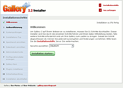
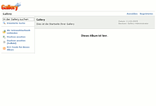

Gallery
Dieser Artikel wurde für die folgenden Ubuntu-Versionen getestet:
Ubuntu 16.04 Xenial Xerus
Artikel für fortgeschrittene Anwender
Dieser Artikel erfordert mehr Erfahrung im Umgang mit Linux und ist daher nur für fortgeschrittene Benutzer gedacht.
Achtung!
Am 20.6.2014 haben die Entwickler von Gallery angekündigt, dass das Projekt nicht mehr weiterentwickelt und betreut wird - d.h. es gibt keine neuen Version und vor allem auch keine (Sicherheits-) Updates mehr!
Zum Verständnis dieses Artikels sind folgende Seiten hilfreich:
Unter dem Motto "Your Photos on Your Website" stellt Gallery  ein Online-Fotoalbum für eigene oder gemietete Server bereit. Im Gegensatz zu statischen Bildergalerien, bei denen Webseiten und die entsprechenden Vorschaubilder lokal auf dem eigenen Rechner erzeugt und anschließend (per FTP) ins Internet übertragen werden (siehe JAlbum), werden bei Gallery nur die Bilder hoch geladen. Sämtliche weiteren Vorgänge wie das dynamische Erzeugen von HTML-Code und Vorschaubildern sowie die Verwaltung von
ein Online-Fotoalbum für eigene oder gemietete Server bereit. Im Gegensatz zu statischen Bildergalerien, bei denen Webseiten und die entsprechenden Vorschaubilder lokal auf dem eigenen Rechner erzeugt und anschließend (per FTP) ins Internet übertragen werden (siehe JAlbum), werden bei Gallery nur die Bilder hoch geladen. Sämtliche weiteren Vorgänge wie das dynamische Erzeugen von HTML-Code und Vorschaubildern sowie die Verwaltung von
Bildern
Benutzern
Kommentaren
Spracheinstellungen
Vorlagen (Skins)
Erweiterungen (Plugins)
werden auf dem Server ausgeführt. Wer schon einmal Flickr!  , Picasaweb oder vergleichbare Systeme benutzt hat, wird sich schnell zurecht finden. Im Gegensatz zu den genannten Beispielen braucht man sich aber nicht mit mehr oder weniger obskuren Lizenzbedingungen einverstanden erklären, mit denen sich die kommerziellen Betreiber gewisse Rechte im Gegenzug für das meist kostenlose Webhosting (u.U. finanziert über Werbeeinblendungen) sichern. Eine Beispiel-Galerie (ohne Admin-Zugang) vermittelt einen Überblick der zahlreichen Einsatzmöglichkeiten von Gallery.
, Picasaweb oder vergleichbare Systeme benutzt hat, wird sich schnell zurecht finden. Im Gegensatz zu den genannten Beispielen braucht man sich aber nicht mit mehr oder weniger obskuren Lizenzbedingungen einverstanden erklären, mit denen sich die kommerziellen Betreiber gewisse Rechte im Gegenzug für das meist kostenlose Webhosting (u.U. finanziert über Werbeeinblendungen) sichern. Eine Beispiel-Galerie (ohne Admin-Zugang) vermittelt einen Überblick der zahlreichen Einsatzmöglichkeiten von Gallery.
Gallery kann entweder als "stand-alone" Fotoarchiv genutzt (eine Anbindung an digiKam ist möglich) oder in verschiedene Content Management Systeme (CMS) wie z.B. Joomla! eingebunden werden. Wer seine lokale Foto-"Gallery" anderen online zur Verfügung stellen möchte, muss den Zugriff auf den lokalen Webserver von außen freigeben oder Gallery auf eigenem Webspace mit Unterstützung von PHP und MySQL installieren. Am meisten Sinn macht wahrscheinlich der Einsatz von Gallery auf einem dezidiertem (Home-)Server und bei mehreren Benutzern. Verwaltet und gepflegt wird die Bildersammlung über integrierte Administrationswebseiten (Back-End).
Gallery existiert in verschiedenen Versionen: das nicht mehr weiterentwickelte, aber noch in den offiziellen Paketquellen enthaltene Gallery1 und sein Nachfolger Jallery brauchen keine Datenbank. Gallery2 und der Nachfolger Gallery3 setzen eine zwingend voraus. Alle Versionen sind Open Source und unter der GPL lizensiert. Alternativen zu Gallery sind im Artikel Bilder verwalten zu finden.
Hinweis:
Konkret wird in diesem Artikel nur Gallery2 – in diesem Artikel vereinfacht als Gallery bezeichnet – besprochen. Mitte 2014 haben die Entwickler von Gallery angekündigt, dass das Projekt nicht mehr weiterentwickelt und betreut wird - d.h. es gibt keine neuen Version und vor allem auch keine (Sicherheits-)Updates mehr!
Voraussetzungen¶
Gallery benötigt zum Betrieb einen Webserver mit PHP-Unterstützung und eine Datenbank, z.B. MySQL. Die notwendigen Informationen finden sich im Wiki in den folgenden Artikeln:
Außerdem wird zur Bildverarbeitung eines der beiden folgenden Pakete benötigt:
imagemagick
netpbm
Optional, aber empfohlen zur vollständigen Nutzung aller Möglichkeiten von Gallery:
dcraw
ffmpeg (universe)
jhead (universe)
libgd2-xpm
libjpeg-progs
zip
 mit apturl
mit apturl
Paketliste zum Kopieren:
sudo apt-get install dcraw ffmpeg jhead libgd2-xpm libjpeg-progs zip
sudo aptitude install dcraw ffmpeg jhead libgd2-xpm libjpeg-progs zip
Ebenfalls optional, aber empfehlenswert zur webbasierten Verwaltung der MySQL-Datenbank ist phpMyAdmin:
phpmyadmin (universe)
mit apturl
Paketliste zum Kopieren:
sudo apt-get install phpmyadmin
sudo aptitude install phpmyadmin
Installation¶
Hinweis:
Es ist zwingend erforderlich, zuerst einen funktionierenden Webserver mit PHP und MySQL zu installieren. Im Folgenden werden apache2, php5 und MySQL 5.0 verwendet.
Anschließend kann das Programm direkt aus den offiziellen Paketquellen installiert [1] werden:
gallery2 (universe)
mit apturl
Paketliste zum Kopieren:
sudo apt-get install gallery2
sudo aptitude install gallery2
Manuell¶
Aus Sicherheitsgründen kann es sinnvoll sein, die jeweils aktuellste Version selbst zu installieren. Downloads sind unter http://codex.gallery2.org/Downloads zu finden, Anleitungen zu Installation und Update gibt es in der ausführlichen Dokumentation . Beim Erstkontakt mit Gallery wird die Paketinstallation empfohlen (siehe oben).
Abfragen während der Installation aus den Paketquellen¶
MySQL Host:
localhostGallery2 Admin-User:
rootAdmin-Password:
********Apache2 restart?
Nein
Anschließend muss die Datei /etc/apache2/conf.d/gallery2 in einem Editor [2] mit Root-Rechten [3] bearbeitet und das Zeichen # in Zeile 1 entfernt werden:
Alias /gallery2 /usr/share/gallery2
Nun die Apache2-Webserver neustarten bzw. die Konfiguration neu einlesen:
sudo /etc/init.d/apache2 force-reload
Nachträgliche Änderungen an der Paketinstallation können mit:
sudo dpkg-reconfigure gallery2
vorgenommen werden.
Konfiguration¶

Konfigurations-Assistent¶
Nun den Konfigurations-Assistenten im Browser aufrufen:
http://localhost/gallery2/install
und die einzelnen Konfigurationsschritte der Reihe nach durchgehen. Alle Schritte sind sehr gut erklärt und – soweit möglich – mit sinnvollen Einträgen vorbelegt, trotzdem sollte man sich hier in Ruhe die Zeit nehmen, die einzelnen Optionen auch durchzulesen und nur bei Bedarf zu aktivieren. Dies gilt insbesondere für die Installation von Plugins. Der Konfigurations-Assistent lässt sich bei Bedarf auch wiederholen.
In Kurzform:
Willkommen: "Deutsch" als Sprache auswählen
Authentifizierung: Datei /usr/share/gallery2/login.txt mit generierter Zeichenfolge als Inhalt anlegen
Systemprüfungen (Systemprüfung sollte ohne Fehler durchlaufen!)
Installations-Typ: Standard-Installation auswählen
Speicherort einrichten: /var/lib/gallery2/g2data
Datenbank einrichten
DB-Benutzername: root (siehe oben)
DB-Passwort: ******** (siehe oben)
Administratorkonto
Benutzername: admin
Passwort: ******** (kann, muss aber nicht das gleiche wie das DB-Passwort sein)
e-Mail-Adresse: <frei wählbar>
Vollständiger Name: Vorname Nachname
Konfigurationsdatei sichern
Rückmeldung: Gallery-Kern erfolgreich installiert
Plugins installieren: Module nach Bedarf auswählen und installieren lassen (nicht alle sind sinnvoll!)
Sicherheitsprüfung
Installation abschließen
Mit Klick auf den Button ["Gehe zu meiner Gallery!"] ist die Installation abgeschlossen.

Bedienung¶
Gallery im Browser aufrufen: http://<Server-IP>/gallery2/ oder http://localhost/gallery2/ (nur direkt auf dem Server möglich)
und direkt nach der Installation
als Administrator anmelden
Grundeinstellungen vornehmen
neuen Benutzer anlegen
als Administrator abmelden
und anschließend
als Benutzer anmelden
Alben anlegen
Fotos hinzufügen
usw.
Leider existiert bisher keine deutschsprachige Dokumentation zu Gallery. Dafür ist die englische umso ausführlicher. Bei Problemen könnten insbesondere die FAQ und die HowTos weiterhelfen.
Probleme und Lösungen¶
PHP-Datei wird nicht ausgeführt¶
Falls der Webbrowser fragt, ob eine PHP-Datei heruntergeladen werden soll, anstatt sie anzuzeigen, so ist das PHP-Modul im Webserver nicht korrekt aktiviert. Siehe Apache.
Memory Limit¶
Wenn die Systemprüfung nicht fehlerfrei durchläuft, muss die Datei etc/php5/apache2/php.ini mit Root-Rechten [3] bearbeitet werden. Dort hebt man die Option memory_limit auf 32 oder 64 MB an. Anschließend muss der Webserver neu gestartet werden.
Bilder hochladen¶
Wer schnell viele Bilder hochladen und dabei die integrierte Upload-Möglichkeit umgehen möchte, kann einen Unterordner im Gallery-Verzeichnis via FTP nutzen. Dazu muss das Plug-In "Import -> Web / Server" aktiviert sein (zu finden unter "Element hinzufügen"). Danach kann der vorgegebene Ordner (in der Administration hinzufügen) als Suchpunkt gewählt werden. Ist dies getan, sucht Gallery nach Dateien in diesem Ordner und man kann diese direkt importieren (Quelle ).
Probleme Konfigurations-Assistent¶
Falls Konfigurations-Assistent Probleme bereitet, die mit PHP5 zusammenhängen (aufgetreten unter Ubuntu 11.10), bearbeitet man die Datei /usr/share/gallery2/modules/core/classes/GalleryStorage.class und ersetzt die Zeilen 1120 und 1136:
1120: while (ereg('\[([[:alnum:]_=]*)::([[:alnum:]_]*)\]', $query, $regs)) {
1136: while (ereg('\[([[:alnum:]_=]*)\]', $query, $regs)) {durch
1120: while (preg_match('#\[([[:alnum:]_=]*)::([[:alnum:]_]*)\]#', $query, $regs)) {
1136: while (preg_match('#\[([[:alnum:]_=]*)\]#', $query, $regs)) {Upgrade auf Gallery3¶
Ein Upgrade alter Gallery-Installationen auf Gallery3 ist nicht vorgesehen. Auch liegen noch keine Pakete für Ubuntu vor.
Links¶
Open Source Image Galleries
- Übersicht von Bildergalerien (mit Datenbank), Demos verfügbarVoraussetzungen
zum Betrieb von GalleryGallery Remote
- Bilder hochladen
Online-Fotoalbum Gallery3 verschlankt
Heise Newsticker, 10/2010Gallery2 install, Ubuntu 8.04
- ubuntuforums.orgGallery2 Screencast
- DrWeb.de 07/2006
- Erstellt mit Inyoka
-
 2004 – 2017 ubuntuusers.de • Einige Rechte vorbehalten
2004 – 2017 ubuntuusers.de • Einige Rechte vorbehalten
Lizenz • Kontakt • Datenschutz • Impressum • Serverstatus -
Serverhousing gespendet von